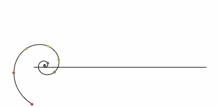

 Mark Roe
- Current Physics & Instrumentation Student at ATU -
Welcome to my personal page! Here you can find my CV, Portfolio, and various other pieces of work. Feel free to have a look around and get in touch.

Welcome to my personal page! Here you can find my CV, Portfolio, and various other pieces of work. Feel free to have a look around and get in touch.